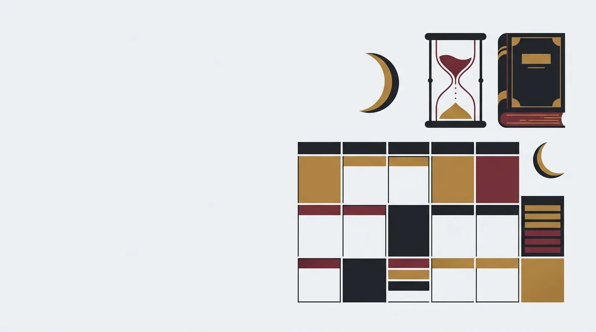

Estudiar con turnos y guardias: cuántas horas y cómo repartirlas en la semana

Cuando haces turnos, la pregunta «cuánto estudio al día» no tiene respuesta, porque no hay dos días iguales. Hoy sales de guardia a las ocho de la mañana, mañana entras a las tres y el jueves no sabes a qué hora acabas. Funciona mejor otra pregunta: cuántas horas puedo reunir en el ciclo completo de turnos.
Cuenta horas por ciclo, no por día
Coge tu cuadrante y mira el ciclo entero, sea de una semana o de tres. Anota qué días son de servicio, cuáles de descanso y cuáles de recuperación tras una noche. Sobre esa foto reparte las horas.
Como punto de partida, entre siete y diez horas semanales de estudio real bastan para sostener un ritmo sin quemarte. Es una recomendación mía, no una cifra de ninguna convocatoria. Si tienes más margen, sube. Si no lo tienes, no te castigues: ajusta según lo que midas en los tests.
Asigna cada tipo de día a una tarea
Una hora después de una guardia de noche no vale lo mismo que una hora en un día libre. Por eso conviene decidir de antemano qué se hace en cada tipo de día, en lugar de improvisar con la cabeza cansada.
- Día de descanso completo: tema nuevo o el más difícil, en dos bloques con pausa.
- Servicio de mañana: un test corto por la tarde, de un solo tema.
- Servicio de tarde o noche: repaso de fallos por la mañana, o inglés.
- Día de salida de guardia: dormir primero. Después, como mucho, un test ligero.
- Víspera de guardia larga: nada nuevo, solo tarjetas de repaso.
Trabaja con tres bloques fijos
Las horas se escurren, los bloques se pueden mover. Usa tres piezas y cámbialas de sitio según te deje el cuadrante.
- Bloque largo, 90 minutos: tema nuevo y esquema propio.
- Bloque corto, 25 minutos: test de un tema.
- Bloque de fallos, 20 minutos: repasar por qué fallaste cada pregunta.
Una semana de unas ocho horas puede ser tres bloques largos, cinco cortos y cuatro de fallos. Si te toca una semana de guardias seguidas, haces uno largo y todos los cortos que quepan.
Reparte también por materias
La primera prueba de la convocatoria de Guardia Civil de 2026 reunía en una misma sesión ortografía, gramática, conocimientos generales e inglés, según el BOE. Las bases cambian entre convocatorias, así que mira siempre las de la última. Pero el reparto te da una idea útil: inglés y gramática se estudian en pastillas de diez o quince minutos, y esas pastillas caben en cualquier turno.
Un ciclo de ejemplo
Imagina un ciclo de cuatro días: mañana, tarde, noche y descanso. En el día de mañana sales a las tres y haces un bloque corto a media tarde. En el de tarde estudias por la mañana, antes de entrar, y ese es tu bloque de fallos. Tras la noche duermes y no estudias, o haces diez minutos de tarjetas si te apetece. En el descanso caben los dos bloques largos. Resultado: dos bloques largos, un corto y uno de fallos por ciclo, sin forzar ningún día.
Cuando el turno cambia a última hora
Los cambios de cuadrante son parte del oficio. Si te mueven un servicio, no rehagas el plan: arrastra los bloques que se han quedado sin hueco al siguiente día libre y descarta los bloques cortos antes que los largos. Lo que no puedes es acumularlos todos para el fin de semana, porque esa montaña no se estudia.
Define tus mínimos
Escribe qué haces cuando la semana se tuerce. Por ejemplo, un test de 25 minutos y un repaso de fallos. Con eso la semana cuenta y el hábito sigue vivo. Una semana de mínimos es normal. Tres seguidas indican que el plan es demasiado grande para tu servicio y toca recortarlo.
La revisión del domingo
Dedica quince minutos, antes de que empiece la semana, a mirar tu cuadrante y colocar los bloques en los huecos reales. Ponlos en el calendario del móvil con hora. Un bloque sin hora suele quedarse sin hacer.
No sacrifiques el sueño ni el entrenamiento
Las pruebas físicas de las convocatorias de 2026 de Guardia Civil y Policía Nacional pueden dejarte fuera del proceso. Quitar horas de sueño o de entrenamiento para estudiar más sale caro. Ajusta antes el número de bloques que el descanso.
Cada dos o tres semanas haz un test completo y compara con el anterior. Si subes, el plan funciona aunque lo hayas cumplido a medias. Si no sube, cambia primero el tipo de bloque (más fallos y menos lectura) y solo después la cantidad de horas.
Empieza en Cupo Militar →